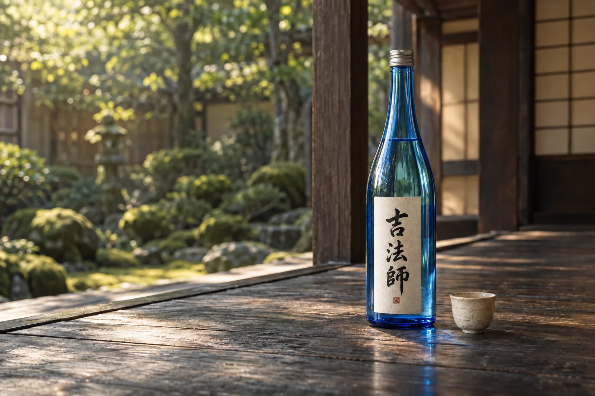

吉法師と、
いだちゃんねる。
京都を拠点に活動するYouTuber、いだちゃんねる。
コバとサイコの二人が販売する日本酒です。
読み方は「きっぽうし」。
商品情報は、発売前に公開します。
いだちゃんねるの日本酒

吉法師について
京都を拠点に活動するYouTuber、いだちゃんねる。
コバとサイコの二人が販売する日本酒です。
読み方は「きっぽうし」。
商品情報は、発売前に公開します。
いだちゃんねるについて
二人が南丹市で購入した古民家。
ここを「いだ城」にしていく様子を、
YouTubeで公開しています。
現在、販売開始に向けて準備中です。発売日・価格・容量・購入方法は、確定後にこのサイトでご案内します。
送料、配送方法、発送までの日数は販売開始時にご案内します。現在はご注文を受け付けておりません。
商品の保管方法は、確定した商品情報と実物ラベルの表示に沿ってご案内します。
ギフト対応の有無、包装・のし、料金は現在確認中です。
返品・交換の条件とお問い合わせ先は、販売開始前にご案内します。
いだちゃんねるの日本酒
きっぽうし
きっぽうし
発売に向けて準備しています。
味わい、香り、原材料などの情報は、
販売開始前にこちらでお知らせします。
価格は公開準備中です税込価格・容量は販売開始時にご案内します
発売日が決まり次第、お知らせします。
20歳未満の方への酒類の販売はいたしません。
送料・配送方法・発送時期・ギフト対応は、販売開始前にご案内します。